|
0.5.0
|
|
0.5.0
|
![\begin{equation}\begin{aligned}
{ p_{r,j}^s}
&= { \rho_r^s}
+ {\delta\rho_{ie,r}^s}
+ { T_r^s}
+ { \mu_j^S I_r^s}
+ c \left[ { dt_r}
- { dt^s}
+ { dt_{ISB}^S}
+ { \delta t^{rel}_{stc}} - { \delta t^{rel}_{clk}}
+ { d_{r,j}^S}
- { d_{j}^s}
+ { \Delta d_{r,j}^s}
\right]
+ { \xi_{r,j}^s}
+ { e_{r,j}^s} \\
{ \varphi_{r,j}^s}
&= { \rho_r^s}
+ {\delta\rho_{ie,r}^s}
+ { T_r^s}
- { \mu_j^S I_r^s}
+ c \left[ { dt_r}
- { dt^s}
+ { dt_{ISB}^S}
+ { \delta t^{rel}_{stc}} - { \delta t^{rel}_{clk}}
+ { \delta_{r,j}^S}
- { \delta_{j}^s}
+ { \Delta \delta_{r,j}^s}
\right]
+ { \zeta_{r,j}^s}
+ { \epsilon_{r,j}^s}
+ { \lambda_j^S}
({ \omega_{r}^s }
+ { N_{r,j}^s}) \\
{ \dotup{p}_r^s} &= {{\mathbf{u}_{r}^{s}}^T}
[ {\mathbf{v}^s}
- {\mathbf{v}_r} ]
- {\delta\dotup{\rho}_{ie,r}^s}
+ { \dotup{T}_r^s}
- { \mu_j^S \dotup{I}_r^s}
+ c [{d\dotup{t}_r}
- {d\dotup{t}^s }
+ {d\dotup{t}_{ISB}^S}
+ { \delta f^{rel}_{clk}}]
\end{aligned}
\end{equation}](form_117.svg)
![\begin{equation*}\begin{array}{clcl}
{ p_{r,j}^s} & \text{Code/pseudorange observable [m]} & { \varphi_{r,j}^s} & \text{Carrier-phase observable [m]} \\
{ \dotup{p}_r^s} & \text{Pseudorange rate (doppler) measurement [m/s]} & \\
{ \rho_r^s} & \text{Receiver-satellite range [m]} & {\mathbf{u}_{r}^s} & \text{Line-of-Sight vector} \\
{\delta\rho_{ie,r}^s} & \text{Earth rotation/Sagnac correction [m]} & {\delta\dotup{\rho}_{ie,r}^s} & \text{Earth rotation/Sagnac rate correction [m/s]} \\
{\mathbf{r}^s} & \text{Satellite position [m]} & {\mathbf{v}^s} & \text{Satellite velocity [m/s]} \\
{\mathbf{r}_r} & \text{Receiver position [m]} & {\mathbf{v}_r} & \text{Receiver velocity [m/s]} \\
{ I_r^s} & \text{Ionospheric delay [m]} & { \mu_j^S} & \text{Ionospheric coefficient} \\
{ T_r^s} & \text{Tropospheric delay [m]} & \\
{ dt_r} & \text{Receiver clock error [s]} & {d\dotup{t}_r} & \text{Receiver clock drift [s/s]} \\
{ dt^s} & \text{Satellite clock error [s]} & {d\dotup{t}^s} & \text{Satellite clock drift [s/s]} \\
{ dt_{ISB}^S} & \text{Clock inter-system bias [s]} & {d\dotup{t}_{ISB}^S} & \text{Inter-system bias clock drift [s/s]} \\
{ \delta t^{rel}_{clk}} & \text{Relativistic clock correction [s]} & { \delta t^{rel}_{stc}} & \text{Relativistic signal delay due to space-time curvature [s]}\\
& & { \delta f^{rel}_{clk}} & \text{Frequency deviation due to relativist effects [-]}\\
{ d_{r,j}^S} & \text{Receiver code hardware bias [s]} & { \delta_{r,j}^S} & \text{Receiver phase hardware bias [s]} \\
{ d_{j}^s} & \text{Satellite code hardware bias [s]} & { \delta_{j}^s} & \text{Satellite phase hardware bias [s]} \\
{ \Delta d_{r,j}^s} & \text{Code interchannel bias [s] (FDMA only)} & { \Delta \delta_{r,j}^s} & \text{Phase interchannel bias [s] (FDMA only)} \\
{ \xi_{r,j}^s} & \text{Phase-center offset \& variation [m]} & { \zeta_{r,j}^s} & \text{Phase-center offset \& variation [m]} \\
{ e_{r,j}^s} & \text{Residual errors (noise, mulitpath, NLOS) [m]} & { \epsilon_{r,j}^s} & \text{Residual errors (noise, mulitpath, NLOS) [m]} \\
{ \lambda_j^S} & \text{Wavelength [m]} & { N_{r,j}^s} & \text{Carrier-phase ambiguity [cyc]} \\
{ \omega_{r}^s } & \text{Phase wind-up error [m]} \\
\end{array}
\end{equation*}](form_118.svg)
See
Base receiver
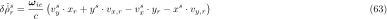
, rover receiver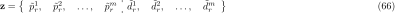
![\begin{equation}\begin{aligned}
{ p_{br}^s}
&= { p_{r}^s} - { p_{b}^s}
&&= \overbrace{{ \rho_r^s} - { \rho_b^s}}^{ \rho_{br}^s}
+ \overbrace{{ \delta\rho_{ie,r}^s} - { \delta\rho_{ie,b}^s}}^{ \delta\rho_{ie,br}^s}
+ \overbrace{{ T_r^s} - { T_b^s}}^{ T_{br}^s}
+ {\mu_j^S} (\overbrace{{ I_r^s} - { I_b^s}}^{ I_{br}^s})
+ c\ [ \overbrace{{ dt_r} - { dt_b}}^{ dt_{br}}
- \overbrace{({ dt^s} - { dt^s})}^{= 0}
+ \overbrace{{ dt_{ISB}^S} - { dt_{ISB}^S}}^{= 0}
+ \overbrace{{ \delta t^{rel,s}_{stc,r}} - { \delta t^{rel,s}_{stc,b}}}^{ \delta t^{rel,s}_{stc,br}}
- \overbrace{({ \delta t^{rel,s}_{clk}} - { \delta t^{rel,s}_{clk}})}^{= 0}
]\\
& &&\quad\, + c\ [ \underbrace{{ d_{r,j}^S} - { d_{b,j}^S}}_{ d_{br,j}^S}
- \underbrace{({ d_{j}^s} - { d_{j}^s})}_{= 0}
+ \underbrace{{ \Delta d_{r,j}^s} - { \Delta d_{b,j}^s}}_{ \Delta d_{br,j}^s}
]
+ \underbrace{{ \xi_{r,j}^s} - { \xi_{b,j}^s}}_{ \xi_{br,j}^s}
+ \underbrace{{ e_{r,j}^s} - { e_{b,j}^s}}_{ e_{br,j}^s} \\
{ \varphi_{br}^s}
&= { \varphi_{r}^s} - { \varphi_{b}^s}
&&= \overbrace{{ \rho_r^s} - { \rho_b^s}}^{ \rho_{br}^s}
+ \overbrace{{ \delta\rho_{ie,r}^s} - { \delta\rho_{ie,b}^s}}^{ \delta\rho_{ie,br}^s}
+ \overbrace{{ T_r^s} - { T_b^s}}^{ T_{br}^s}
- {\mu_j^S} (\overbrace{{ I_r^s} - { I_b^s}}^{ I_{br}^s})
+ c [ \overbrace{{ dt_r} - { dt_b}}^{ dt_{br}}
- \overbrace{({ dt^s} - { dt^s})}^{= 0}
+ \overbrace{{ dt_{ISB}^S} - { dt_{ISB}^S}}^{= 0}
+ \overbrace{{ \delta t^{rel,s}_{stc,r}} - { \delta t^{rel,s}_{stc,b}}}^{ \delta t^{rel,s}_{stc,br}}
- \overbrace{({ \delta t^{rel,s}_{clk}} - { \delta t^{rel,s}_{clk}})}^{= 0}
]\\
& &&\quad\, + c [\underbrace{{ \delta_{r,j}^S} - { \delta_{b,j}^S}}_{ \delta_{br,j}^S}
- \underbrace{({ \delta_{j}^s} - { \delta_{j}^s})}_{= 0}
+ \underbrace{{ \Delta \delta_{r,j}^s} - { \Delta \delta_{b,j}^s}}_{ \Delta \delta_{br,j}^s}
]
+ \underbrace{{ \zeta_{r,j}^s} - { \zeta_{b,j}^s}}_{ \zeta_{br,j}^s}
+ \underbrace{{ \epsilon_{r,j}^s} - { \epsilon_{b,j}^s}}_{ \epsilon_{br,j}^s}
+ { \lambda_j^S}
(\underbrace{{ N_{r,j}^s} - { N_{b,j}^s}}_{ N_{br}^s}
+ \underbrace{{ \omega_{r}^s } - { \omega_{b}^s }}_{ \omega_{br}^s }) \\
{ \dotup{p}_{br}^s}
&= { \dotup{p}_{r}^s} - { \dotup{p}_{b}^s}
&&= {{\mathbf{u}_{r}^{s}}^T} [{\mathbf{v}^s} - {\mathbf{v}_r} ]
- {{\mathbf{u}_{b}^{s}}^T} {\mathbf{v}^s}
- \overbrace{({\delta\dotup{\rho}_{ie,r}^s} - {\delta\dotup{\rho}_{ie,b}^s})}^{\delta\dotup{\rho}_{ie,br}^s}
+ \overbrace{{ \dotup{T}_r^s} - { \dotup{T}_b^s}}^{\approx 0}
+ {\mu_j^S} (\overbrace{{ \dotup{I}_r^s} - { \dotup{I}_b^s}}^{\approx 0})
+ c [\overbrace{{d\dotup{t}_r} - {d\dotup{t}_b}}^{d\dotup{t}_{br}}
- \overbrace{({d\dotup{t}^s } - {d\dotup{t}^s })}^{= 0}
+ \overbrace{{d\dotup{t}_{ISB}^S} - {d\dotup{t}_{ISB}^S}}^{= 0}
+ \overbrace{{ \delta f^{rel,s}_{clk}} - { \delta f^{rel,s}_{clk}}}^{= 0}]
\end{aligned}
\end{equation}](form_121.svg)
![\begin{equation}\begin{aligned}
{ p_{br}^s} &= { \rho_{br}^s}
+ { \delta\rho_{ie,br}^s}
+ { T_{br}^s}
+ {\mu_j^S} { I_{br}^s}
+ c \left[ { dt_{br}}
+ { \delta t^{rel,s}_{stc,br}}
+ { d_{br,j}^S}
+ { \Delta d_{br,j}^s}
\right]
+ { \xi_{br,j}^s}
+ { e_{br,j}^s} \\
{ \varphi_{br}^s} &= { \rho_{br}^s}
+ { \delta\rho_{ie,br}^s}
+ { T_{br}^s}
- {\mu_j^S} { I_{br}^s}
+ c \left[ { dt_{br}}
+ { \delta t^{rel,s}_{stc,br}}
+ { \delta_{br,j}^S}
+ { \Delta \delta_{br,j}^s}
\right]
+ { \zeta_{br,j}^s}
+ { \epsilon_{br,j}^s}
+ { \lambda_j^S}
({ N_{br}^s}
+ { \omega_{br}^s }) \\
{ d_{br}^s} &= {{\mathbf{u}_{r}^{s}}^T} [{\mathbf{v}^s} - {\mathbf{v}_r} ]
- {{\mathbf{u}_{b}^{s}}^T} {\mathbf{v}^s}
- {\delta\dotup{\rho}_{ie,br}^s}
+ c\ {d\dotup{t}_{br}}
\end{aligned}
\end{equation}](form_122.svg)
See
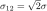
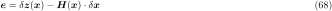
and other satellites as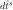
1 Pivot satellite per GNSS constellation needed. Double Difference only possible for measurements on same frequency, otherwise the hardware biases do not cancel out each other
![\begin{equation}\begin{aligned}
{ p_{br}^{1s}}
&= { p_{br}^s} - { p_{br}^1}
&&= \overbrace{{ \rho_{br}^s} - { \rho_{br}^1}}^{ \rho_{br}^{1s}}
+ \overbrace{{ \delta\rho_{ie,br}^s} - { \delta\rho_{ie,br}^1}}^{ \delta\rho_{ie,br}^{1s}}
+ \overbrace{{ T_{br}^s} - { T_{br}^1}}^{ T_{br}^{1s}}
+ \overbrace{{\mu_j^1} { I_{br}^s} - {\mu_j^1} { I_{br}^1}}^{{\mu_j^{1}} { I_{br}^{1s}}}
+ c\ [ \overbrace{{ dt_{br}} - { dt_{br}}}^{= 0}
+ \overbrace{{ \delta t^{rel,s}_{stc,br}} - { \delta t^{rel,1}_{stc,br}}}^{ \delta t^{rel,1s}_{stc,br}}
]\\
& &&\quad\, + c\ [ \underbrace{{ d_{br,j}^S} - { d_{br,j}^1}}_{ d_{br}^{1S}}
+ \underbrace{{ \Delta d_{br,j}^s} - { \Delta d_{br,j}^1}}_{ \Delta d_{br}^{1s}}
]
+ \underbrace{{ \xi_{br,j}^s} - { \xi_{br,j}^1}}_{ \xi_{br}^{1s}}
+ \underbrace{{ e_{br,j}^s} - { e_{br,j}^1}}_{ e_{br}^{1s}}\\
{ \varphi_{br}^{1s}}
&= { \varphi_{br}^s} - { \varphi_{br}^1}
&&= \overbrace{{ \rho_{br}^s} - { \rho_{br}^1}}^{ \rho_{br}^{1s}}
+ \overbrace{{ \delta\rho_{ie,br}^s} - { \delta\rho_{ie,br}^1}}^{ \delta\rho_{ie,br}^{1s}}
+ \overbrace{{ T_{br}^s} - { T_{br}^1}}^{ T_{br}^{1s}}
- \overbrace{({\mu_j^1} { I_{br}^s} - {\mu_j^1} { I_{br}^1})}^{{\mu_j^{1}} { I_{br}^{1s}}}
+ c [ \overbrace{{ dt_{br}} - { dt_{br}}}^{= 0}
+ \overbrace{{ \delta t^{rel,s}_{stc,br}} - { \delta t^{rel,1}_{stc,br}}}^{ \delta t^{rel,1s}_{stc,br}}
]\\
& &&\quad\, + c [\underbrace{{ \delta_{br,j}^S} - { \delta_{br,j}^1}}_{ \delta_{br}^{1S}}
+ \underbrace{{ \Delta \delta_{br,j}^s} - { \Delta \delta_{br,j}^1}}_{ \Delta \delta_{br}^{1s}}
]
+ \underbrace{{ \zeta_{br,j}^s} - { \zeta_{br,j}^1}}_{ \zeta_{br}^{1s}}
+ \underbrace{{ \epsilon_{br,j}^s} - { \epsilon_{br,j}^1}}_{ \epsilon_{br}^{1s}}
+ { \lambda_j^1} (\underbrace{{N_{br}^s} - {N_{br}^1}}_{N_{br}^{1s}}
+ \underbrace{{\omega_{br}^s} - {\omega_{br}^1}}_{\omega_{br}^{1s}})\\
{ \dotup{p}_{br}^{1s}}
&= { \dotup{p}_{br}^s} - { \dotup{p}_{br}^1}
&&= {{\mathbf{u}_{r}^{s}}^T} [{\mathbf{v}^s} - {\mathbf{v}_r} ]
- {{\mathbf{u}_{b}^{s}}^T} {\mathbf{v}^s}
- {{\mathbf{u}_{r}^{1}}^T} [{\mathbf{v}^1} - {\mathbf{v}_r} ]
+ {{\mathbf{u}_{b}^{1}}^T} {\mathbf{v}^1}
- ({\delta\dotup{\rho}_{ie,br}^s} - {\delta\dotup{\rho}_{ie,br}^1})
+ c [ \overbrace{{d\dotup{t}_{br}} - {d\dotup{t}_{br}}}^{= 0} ]
\end{aligned}
\end{equation}](form_126.svg)
![\begin{equation}\begin{aligned}
{ p_{br}^{1s}} &= { \rho_{br}^{1s}}
+ { \delta\rho_{ie,br}^{1s}}
+ { T_{br}^{1s}}
+ {\mu_j^{1}} { I_{br}^{1s}}
+ c \left[ { \delta t^{rel,1s}_{stc,br}}
+ { d_{br}^{1S}}
+ { \Delta d_{br}^{1s}}
\right]
+ { \xi_{br}^{1s}}
+ { e_{br}^{1s}} \\
{ \varphi_{br}^{1s}} &= { \rho_{br}^{1s}}
+ { \delta\rho_{ie,br}^{1s}}
+ { T_{br}^{1s}}
- {\mu_j^{1}} { I_{br}^{1s}}
+ c \left[ { \delta t^{rel,1s}_{stc,br}}
+ { \delta_{br}^{1S}}
+ { \Delta \delta_{br,j}^{1s}}
\right]
+ { \zeta_{br}^{1s}}
+ { \epsilon_{br}^{1s}}
+ { \lambda_j^1} ({ N_{br}^{1s}} + { \omega_{br}^{1s}})\\
{ \dotup{p}_{br}^{1s}} &= {{\mathbf{u}_{r}^{s}}^T} [{\mathbf{v}^s} - {\mathbf{v}_r} ]
- {{\mathbf{u}_{b}^{s}}^T} {\mathbf{v}^s}
- {{\mathbf{u}_{r}^{1}}^T} [{\mathbf{v}^1} - {\mathbf{v}_r} ]
+ {{\mathbf{u}_{b}^{1}}^T} {\mathbf{v}^1}
- ({\delta\dotup{\rho}_{ie,br}^s} - {\delta\dotup{\rho}_{ie,br}^1})
\end{aligned}
\end{equation}](form_127.svg)
See
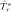
Theoretically our state would consist of the following states, satellite 1 being our pivot satellite.
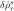
This will however lead to the system not being solvable in a unique way, as it is is rank-deficient (see [48] SpringerHandbookGNSS2017, ch. 26.3.1, p. 763).
To solve this, we set the ambiguity of the pivot satellite to 0 and remove it from the state. This means all other ambiguities will be relative to the pivot satellite ambiguity. This practically results in us doing double difference ambiguities in the state
![\begin{equation}\mathbf{x}^e
=
\begin{bmatrix}
{ \mathbf{r}_{r} } \\
{ \mathbf{v}_{r} } \\\hdashline
{N_{br}^2} - {N_{br}^1} \\
{N_{br}^3} - {N_{br}^1} \\
\vdots \\
{N_{br}^m} - {N_{br}^1} \\
\end{bmatrix}
=
\begin{bmatrix}
{ \mathbf{r}_{r} } \\
{ \mathbf{v}_{r} } \\\hdashline
{N_{br}^{12}} \\
{N_{br}^{13}} \\
\vdots \\
{N_{br}^{1m}} \\
\end{bmatrix}
=
\begin{bmatrix}
\text{Baseline from Base to Rover [m]} \\
\text{Velocity difference between base and rover [m/s]} \\ \hdashline
\text{Double-Differenced Carrier-phase ambiguity of satellite 2 [cyc]} \\
\text{Double-Differenced Carrier-phase ambiguity of satellite 3 [cyc]} \\
\vdots \\
\text{Double-Differenced Carrier-phase ambiguity of satellite m [cyc]} \\
\end{bmatrix}
\end{equation}](form_130.svg)
The ambiguities can be initialized from the difference of the carrier-phase and pseudorange measurements
![\begin{equation}\begin{aligned}
{ \tilde{\varphi}_{br}^{1s}} - { \tilde{p}_{br}^{1s}}
&= { \rho_{br}^{1s}}
+ { \delta\rho_{ie,br}^{1s}}
+ { T_{br}^{1s}}
- {\mu_j^{1}} { I_{br}^{1s}}
+ c \left[ { \delta t^{rel,1s}_{stc,br}}
+ { \delta_{br}^{1S}}
+ { \Delta \delta_{br,j}^{1s}}
\right]
+ { \zeta_{br}^{1s}}
+ { \epsilon_{br}^{1s}}
+ { \lambda_j^1} ({ N_{br}^{1s}} + { \omega_{br}^{1s}})\\
&- { \rho_{br}^{1s}}
- { \delta\rho_{ie,br}^{1s}}
- { T_{br}^{1s}}
- {\mu_j^{1}} { I_{br}^{1s}}
- c \left[ { \delta t^{rel,1s}_{stc,br}}
+ { d_{br}^{1S}}
+ { \Delta d_{br}^{1s}}
\right]
- { \xi_{br}^{1s}}
- { e_{br}^{1s}}\\
{ \tilde{\varphi}_{br}^{1s}} - { \tilde{p}_{br}^{1s}}
&= -2 {\mu_j^{1}} { I_{br}^{1s}}
+ c \left[ { \delta_{br}^{1S}}
+ { \Delta \delta_{br,j}^{1s}}
- { d_{br}^{1S}}
- { \Delta d_{br}^{1s}}
\right]
+ { \zeta_{br}^{1s}}
- { \xi_{br}^{1s}}
+ { \epsilon_{br}^{1s}}
- { e_{br}^{1s}}
+ { \lambda_j^1} ({ N_{br}^{1s}} + { \omega_{br}^{1s}})\\
{ N_{br}^{1s}} &= \frac{1}{{ \lambda_j^1}}
\left(
{ \tilde{\varphi}_{br}^{1s}} - { \tilde{p}_{br}^{1s}}
+2 {\mu_j^{1}} { I_{br}^{1s}}
- c \left[ { \delta_{br}^{1S}}
+ { \Delta \delta_{br,j}^{1s}}
- { d_{br}^{1S}}
- { \Delta d_{br}^{1s}}
\right]
- { \zeta_{br}^{1s}}
+ { \xi_{br}^{1s}}
- { \epsilon_{br}^{1s}}
+ { e_{br}^{1s}}
- { \lambda_j^1} { \omega_{br}^{1s}}
\right)
\end{aligned}
\end{equation}](form_131.svg)
Neglecting the error terms this becomes
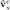
However the pseudorange error terms are quite big and can lead to significant errors
As the pseudorange is very noisy, it is better to use the estimated measurement (with ambiguity 0) when the position is known
![\begin{equation}\begin{aligned}
{ \tilde{\varphi}_{br}^{1s}} - { \hat{\varphi}_{br}^{1s}}
&= { \rho_{br}^{1s}}
+ { \delta\rho_{ie,br}^{1s}}
+ { T_{br}^{1s}}
- {\mu_j^{1}} { I_{br}^{1s}}
+ c \left[ { \delta t^{rel,1s}_{stc,br}}
+ { \delta_{br}^{1S}}
+ { \Delta \delta_{br,j}^{1s}}
\right]
+ { \zeta_{br}^{1s}}
+ { \epsilon_{br}^{1s}}
+ { \lambda_j^1} ({ N_{br}^{1s}} + { \omega_{br}^{1s}})\\
&- { \hat{\rho}_{br}^{1s}}
- { \delta\hat{\rho}_{ie,br}^{1s}}
- { \hat{T}_{br}^{1s}}
+ {\mu_j^{1}} { \hat{I}_{br}^{1s}}\\
{ \tilde{\varphi}_{br}^{1s}} - { \hat{\varphi}_{br}^{1s}}
&= c \left[ { \delta t^{rel,1s}_{stc,br}}
+ { \delta_{br}^{1S}}
+ { \Delta \delta_{br,j}^{1s}}
\right]
+ { \zeta_{br}^{1s}}
+ { \epsilon_{br}^{1s}}
+ { \lambda_j^1} ({ N_{br}^{1s}} + { \omega_{br}^{1s}})\\
{ N_{br}^{1s}} &= \frac{1}{{ \lambda_j^1}}
\left(
{ \tilde{\varphi}_{br}^{1s}} - { \hat{\varphi}_{br}^{1s}}
- c \left[ { \delta t^{rel,1s}_{stc,br}}
+ { \delta_{br}^{1S}}
+ { \Delta \delta_{br,j}^{1s}}
\right]
- { \zeta_{br}^{1s}}
- { \epsilon_{br}^{1s}}
- { \lambda_j^1} { \omega_{br}^{1s}}
\right)
\end{aligned}
\end{equation}](form_133.svg)
Neglecting the error terms this becomes
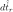
When the pivot satellite changes, we have to take this into account. Lets assume we have 5 satellites and satellite 1 is the current pivot. Therefore the double difference ambiguity of satellite 1 is not in the state (as it would be 0 anyway)
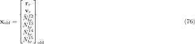
Satellite 2 becomes the new pivot We can transform the state with a matrix  with
with 
![\begin{equation}\begin{bmatrix}
{ \mathbf{r}_{r} } \\
{ \mathbf{v}_{r} } \\ \hdashline
{N_{br}^{21}} = {N_{br}^{1}} - {N_{br}^{2}} \\
{N_{br}^{23}} = {N_{br}^{3}} - {N_{br}^{2}} \\
{N_{br}^{24}} = {N_{br}^{4}} - {N_{br}^{2}} \\
{N_{br}^{25}} = {N_{br}^{5}} - {N_{br}^{2}} \\
\end{bmatrix}_{\text{new}}
=
\overbrace{
\left[\begin{array}{cc:cccc}
\mathbf{I}_3 & \mathbf{0}_3 & 0 & 0 & 0 & 0 \\
\mathbf{0}_3 & \mathbf{I}_3 & 0 & 0 & 0 & 0 \\\hdashline
\mathbf{0}_{1,3} & \mathbf{0}_{1,3} & -1 & 0 & 0 & 0 \\
\mathbf{0}_{1,3} & \mathbf{0}_{1,3} & -1 & 1 & 0 & 0 \\
\mathbf{0}_{1,3} & \mathbf{0}_{1,3} & -1 & 0 & 1 & 0 \\
\mathbf{0}_{1,3} & \mathbf{0}_{1,3} & -1 & 0 & 0 & 1 \\
\end{array}\right]
}^{\mathbf{D}}
\cdot
\begin{bmatrix}
{ \mathbf{r}_{r} } \\
{ \mathbf{v}_{r} } \\ \hdashline
{N_{br}^{12}} = {N_{br}^{2}} - {N_{br}^{1}} \\
{N_{br}^{13}} = {N_{br}^{3}} - {N_{br}^{1}} \\
{N_{br}^{14}} = {N_{br}^{4}} - {N_{br}^{1}} \\
{N_{br}^{15}} = {N_{br}^{5}} - {N_{br}^{1}} \\
\end{bmatrix}_{\text{old}}
\end{equation}](form_138.svg)
with
![\begin{equation}\begin{bmatrix}
{ \mathbf{r}_{r} } \\
{ \mathbf{v}_{r} } \\ \hdashline
\cancel{{N_{br}^{21}} = 0} \\
{N_{br}^{23}} = {N_{br}^{3}} - {N_{br}^{2}} \\
{N_{br}^{24}} = {N_{br}^{4}} - {N_{br}^{2}} \\
{N_{br}^{25}} = {N_{br}^{5}} - {N_{br}^{2}} \\
\end{bmatrix}_{\text{new}}
=
\overbrace{
\left[\begin{array}{cc:cccc}
\mathbf{I}_3 & \mathbf{0}_3 & 0 & 0 & 0 & 0 \\
\mathbf{0}_3 & \mathbf{I}_3 & 0 & 0 & 0 & 0 \\\hdashline
\mathbf{0}_{1,3} & \mathbf{0}_{1,3} & 0 & 0 & 0 & 0 \\
\mathbf{0}_{1,3} & \mathbf{0}_{1,3} & -1 & 1 & 0 & 0 \\
\mathbf{0}_{1,3} & \mathbf{0}_{1,3} & -1 & 0 & 1 & 0 \\
\mathbf{0}_{1,3} & \mathbf{0}_{1,3} & -1 & 0 & 0 & 1 \\
\end{array}\right]
}^{\mathbf{D}}
\cdot
\begin{bmatrix}
{ \mathbf{r}_{r} } \\
{ \mathbf{v}_{r} } \\ \hdashline
{N_{br}^{12}} = {N_{br}^{2}} - {N_{br}^{1}} \\
{N_{br}^{13}} = {N_{br}^{3}} - {N_{br}^{1}} \\
{N_{br}^{14}} = {N_{br}^{4}} - {N_{br}^{1}} \\
{N_{br}^{15}} = {N_{br}^{5}} - {N_{br}^{1}} \\
\end{bmatrix}_{\text{old}}
\end{equation}](form_139.svg)
After a transformation, the covariance matrix has also to be adapted by error propagation

See [46] Stucke2023
The linearized observation equation is valid for a common point in time. So for example the rover receiver time
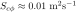
However, the base observation is observed at a time
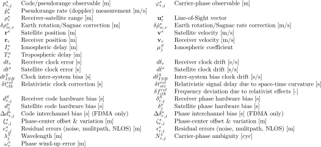
. So we need to sync the observations according to [46] Stucke2023, ch. 3 in two steps.The observations estimate their observations at times for the base and for the rover. However they are not logged for the estimated times but instead for the internal clock at times
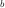
and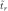
. According to [46] Stucke2023 the error lies in the order of milliseconds. To remove this error, the receiver clock errors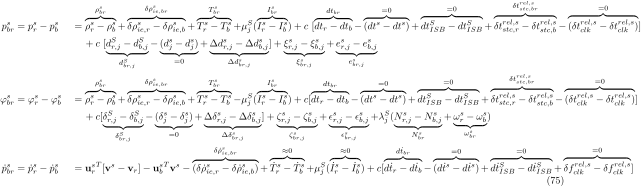
and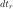
are estimated by a SPP. This allows evaluation of the observations at the correct instances of time

While this correction of the time makes sense, it proved to deteriorate the solution. So this first step is not applied.
We now correcting the pseudorange  of the base to the time of the rover
of the base to the time of the rover  . This can be done for the carrier-phase analogously.
. This can be done for the carrier-phase analogously.
Assuming the time-dependent error is approximately driven by the geometrical range, the correction equation for the basis receiver can be given as
The linearized observation equation is
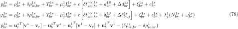
For the double differenced pseudorange this is
![\begin{equation}\begin{aligned}
{ \tilde{p}_{br}^{1s}}({ t_r})
- { \hat{p}_{br}^{1s}}({ t_r})
&= \mathbf{H}({ t_r})\delta\mathbf{x}({ t_r}) \\
\left[\big({ \tilde{p}_{r}^s}({ t_r})
- { \tilde{p}_{b}^s}({ t_r})\big)
- \big({ \tilde{p}_{r}^1}({ t_r})
- { \tilde{p}_{b}^1}({ t_r})\big)\right]
- \left[\big({ \hat{p}_{r}^s}({ t_r})
- { \hat{p}_{b}^s}({ t_r})\big)
- \big({ \hat{p}_{r}^1}({ t_r})
- { \hat{p}_{b}^1}({ t_r})\big)\right]
&= \mathbf{H}({ t_r})\delta\mathbf{x}({ t_r}) \\
\left[\big({ \tilde{p}_{r}^s}({ t_r})
- [\overbrace{{ \tilde{p}_{b}^s}({ t_b})
+ \cancel{{ \hat{p}_{b}^s}({ t_r})}
- { \hat{p}_{b}^s}({ t_b})}^{{ \tilde{p}_{b}^s}({ t_r})}]\big)
- \big({ \tilde{p}_{r}^1}({ t_r})
- [\overbrace{{ \tilde{p}_{b}^1}({ t_b})
+ \cancel{{ \hat{p}_{b}^1}({ t_r})}
- { \hat{p}_{b}^1}({ t_b})}^{{ \tilde{p}_{b}^1}({ t_r})}]\big)\right]
- \left[({ \hat{p}_{r}^s}({ t_r})
- \cancel{{ \hat{p}_{b}^s}({ t_r})})
- ({ \hat{p}_{r}^1}({ t_r})
- \cancel{{ \hat{p}_{b}^1}({ t_r})})\right]
&= \mathbf{H}({ t_r})\delta\mathbf{x}({ t_r}) \\
\left[\big({ \tilde{p}_{r}^s}({ t_r})
- { \tilde{p}_{b}^s}({ t_b})\big)
- \big({ \tilde{p}_{r}^1}({ t_r})
- { \tilde{p}_{b}^1}({ t_b})\big)\right]
- \left[\big({ \hat{p}_{r}^s}({ t_r})
- { \hat{p}_{b}^s}({ t_b})\big)
- \big({ \hat{p}_{r}^1}({ t_r})
- { \hat{p}_{b}^1}({ t_b})\big)\right]
&= \mathbf{H}({ t_r})\delta\mathbf{x}({ t_r}) \\
\end{aligned}
\end{equation}](form_153.svg)
![\begin{equation}\begin{aligned}
{ p_{r,j}^s}
&= { \rho_r^s}
+ {\delta\rho_{ie,r}^s}
+ { T_r^s}
+ { \mu_j^S I_r^s}
+ c \left[ { dt_r}
- { dt^s}
+ { dt_{ISB}^S}
+ { \delta t^{rel}_{stc}} - { \delta t^{rel}_{clk}}
+ { d_{r,j}^S}
- { d_{j}^s}
+ { \Delta d_{r,j}^s}
\right]
+ { \xi_{r,j}^s}
+ { e_{r,j}^s} \\
{ \varphi_{r,j}^s}
&= { \rho_r^s}
+ {\delta\rho_{ie,r}^s}
+ { T_r^s}
- { \mu_j^S I_r^s}
+ c \left[ { dt_r}
- { dt^s}
+ { dt_{ISB}^S}
+ { \delta t^{rel}_{stc}} - { \delta t^{rel}_{clk}}
+ { \delta_{r,j}^S}
- { \delta_{j}^s}
+ { \Delta \delta_{r,j}^s}
\right]
+ { \zeta_{r,j}^s}
+ { \epsilon_{r,j}^s}
+ { \lambda_j^S}
({ \omega_{r}^s }
+ { N_{r,j}^s})\\
{ \dotup{p}_r^s} &= {{\mathbf{u}_{r}^{s}}^T}
[ {\mathbf{v}^s}
- {\mathbf{v}_r} ]
- {\delta\dotup{\rho}_{ie,r}^s}
+ { \dotup{T}_r^s}
- { \mu_j^S \dotup{I}_r^s}
+ c [{d\dotup{t}_r}
- {d\dotup{t}^s }
+ {d\dotup{t}_{ISB}^S}
+ { \delta f^{rel}_{clk}}]
\end{aligned}
\end{equation}](form_154.svg)
![\begin{equation}\begin{aligned}
{ p_{br}^s}
&= { p_{r}^s}({ t_r}) - { p_{b}^s}({ t_b})
&&= \overbrace{{ \rho_r^s}({ t_r}) - { \rho_b^s}({ t_b})}^{ \rho_{br}^s}
+ \overbrace{{ \delta\rho_{ie,r}^s}({ t_r}) - { \delta\rho_{ie,b}^s}({ t_b})}^{ \delta\rho_{ie,br}^s}
+ \overbrace{{ T_r^s}({ t_r}) - { T_b^s}({ t_b})}^{ T_{br}^s}
+ {\mu_j^S} (\overbrace{{ I_r^s}({ t_r}) - { I_b^s}({ t_b})}^{ I_{br}^s}) \\
& &&\quad\, + c\ [ \overbrace{{ dt_r}({ t_r}) - { dt_b}({ t_b})}^{ dt_{br}}
- \overbrace{({ dt^s}({ t_r}) - { dt^s}({ t_b}))}^{{ dt_{br}^s}}
+ \overbrace{{ dt_{ISB}^S}({ t_r}) - { dt_{ISB}^S}({ t_b})}^{\approx 0}
+ \overbrace{{ \delta t^{rel,s}_{stc,r}}({ t_r})
- { \delta t^{rel,s}_{stc,b}}({ t_b})}^{ \delta t^{rel,s}_{stc,br}}
- \overbrace{({ \delta t^{rel,s}_{clk}}({ t_r})
- { \delta t^{rel,s}_{clk}}({ t_b}))}^{{ \delta t^{rel,s}_{clk,br}}}
]\\
& &&\quad\, + c\ [ \underbrace{{ d_{r,j}^S}({ t_r}) - { d_{b,j}^S}({ t_b})}_{ d_{br,j}^S}
- \underbrace{({ d_{j}^s}({ t_r}) - { d_{j}^s}({ t_b}))}_{{ d_{br,j}^s}}
+ \underbrace{{ \Delta d_{r,j}^s}({ t_r}) - { \Delta d_{b,j}^s}({ t_b})}_{ \Delta d_{br,j}^s}
]
+ \underbrace{{ \xi_{r,j}^s}({ t_r}) - { \xi_{b,j}^s}({ t_b})}_{ \xi_{br,j}^s}
+ \underbrace{{ e_{r,j}^s}({ t_r}) - { e_{b,j}^s}({ t_b})}_{ e_{br,j}^s}
\end{aligned}
\end{equation}](form_155.svg)
 drifts with approximately
drifts with approximately 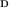
which can lead to a maximum error of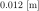
over 1 second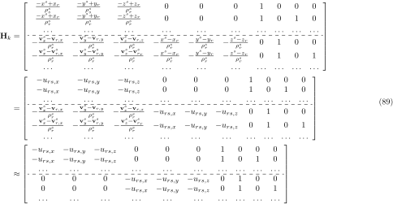
can be bounded by which leads to a maximum error of
which leads to a maximum error of ![$4 \times 10^{-5}\ \text{[m]}$](form_161.svg) over 1 second and can be neglected
over 1 second and can be neglected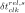
(maximum value for GPS )
)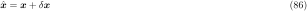
and satellite phase hardware bias also don't cancel out
![\begin{equation}\begin{aligned}
{ \varphi_{br}^s}
&= { \varphi_{r}^s}({ t_r}) - { \varphi_{b}^s}({ t_b})
&&= \overbrace{{ \rho_r^s}({ t_r}) - { \rho_b^s}({ t_b})}^{ \rho_{br}^s}
+ \overbrace{{ \delta\rho_{ie,r}^s}({ t_r}) - { \delta\rho_{ie,b}^s}({ t_b})}^{ \delta\rho_{ie,br}^s}
+ \overbrace{{ T_r^s}({ t_r}) - { T_b^s}({ t_b})}^{ T_{br}^s}
- {\mu_j^S} (\overbrace{{ I_r^s}({ t_r}) - { I_b^s}({ t_b})}^{ I_{br}^s}) \\
& &&\quad\, + c [ \overbrace{{ dt_r}({ t_r}) - { dt_b}({ t_b})}^{ dt_{br}}
- \overbrace{({ dt^s}({ t_r}) - { dt^s}({ t_b}))}^{{ dt_{br}^s}}
+ \overbrace{{ dt_{ISB}^S}({ t_r}) - { dt_{ISB}^S}({ t_b})}^{\approx 0}
+ \overbrace{{ \delta t^{rel,s}_{stc,r}}({ t_r})
- { \delta t^{rel,s}_{stc,b}}({ t_b})}^{ \delta t^{rel,s}_{stc,br}}
- \overbrace{({ \delta t^{rel,s}_{clk}}({ t_r})
- { \delta t^{rel,s}_{clk}}({ t_b}))}^{{ \delta t^{rel,s}_{clk,br}}}
]\\
& &&\quad\, + c [\underbrace{{ \delta_{r,j}^S}({ t_r}) - { \delta_{b,j}^S}({ t_b})}_{ \delta_{br,j}^S}
- \underbrace{({ \delta_{j}^s}({ t_r}) - { \delta_{j}^s}({ t_b}))}_{ \delta_{br,j}^s}
+ \underbrace{{ \Delta \delta_{r,j}^s}({ t_r}) - { \Delta \delta_{b,j}^s}({ t_b})}_{ \Delta \delta_{br,j}^s}
]
+ \underbrace{{ \zeta_{r,j}^s}({ t_r}) - { \zeta_{b,j}^s}({ t_b})}_{ \zeta_{br,j}^s}
+ \underbrace{{ \epsilon_{r,j}^s}({ t_r}) - { \epsilon_{b,j}^s}({ t_b})}_{ \epsilon_{br,j}^s}\\
& &&\quad\, + { \lambda_j^S}
(\underbrace{{ N_{r,j}^s}({ t_r}) - { N_{b,j}^s}({ t_b})}_{ N_{br}^s}
+ \underbrace{{ \omega_{r}^s}({ t_r}) - { \omega_{b}^s}({ t_b})}_{ \omega_{br}^s })\\
{ \dotup{p}_{br}^s}
&= { \dotup{p}_{r}^s}({ t_r}) - { \dotup{p}_{b}^s}({ t_b})
&&= {{\mathbf{u}_{r}^{s}}^T}({ t_r})
[{\mathbf{v}^s}({ t_r})
- {\mathbf{v}_r}({ t_r})]
- {{\mathbf{u}_{b}^{s}}^T}({ t_b}) {\mathbf{v}^s}({ t_b})
- \overbrace{({\delta\dotup{\rho}_{ie,r}^s}({ t_r})
- {\delta\dotup{\rho}_{ie,b}^s}({ t_b}))}^{\delta\dotup{\rho}_{ie,br}^s}
+ \overbrace{{ \dotup{T}_r^s}({ t_r})
- { \dotup{T}_b^s}({ t_b})}^{\approx 0}
+ {\mu_j^S} (\overbrace{{ \dotup{I}_r^s}({ t_r})
- { \dotup{I}_b^s}({ t_b})}^{\approx 0})\\
& &&\quad\, + c [\underbrace{{d\dotup{t}_r}({ t_r})
- {d\dotup{t}_b}({ t_b})}_{d\dotup{t}_{br}}
- \underbrace{({d\dotup{t}^s}({ t_r})
- {d\dotup{t}^s}({ t_b}))}_{\approx 0}
+ \underbrace{{d\dotup{t}_{ISB}^S}({ t_r})
- {d\dotup{t}_{ISB}^S}({ t_b})}_{\approx 0}
+ \underbrace{{ \delta f^{rel,s}_{clk}}({ t_r})
- { \delta f^{rel,s}_{clk}}({ t_b})}_{\approx 0}]
\end{aligned}
\end{equation}](form_166.svg)
![\begin{equation}\begin{aligned}
{ p_{br}^{1s}}
&= { p_{br}^s} - { p_{br}^1}
&&= \overbrace{{ \rho_{br}^s} - { \rho_{br}^1}}^{ \rho_{br}^{1s}}
+ \overbrace{{ \delta\rho_{ie,br}^s} - { \delta\rho_{ie,br}^1}}^{ \delta\rho_{ie,br}^{1s}}
+ \overbrace{{ T_{br}^s} - { T_{br}^1}}^{ T_{br}^{1s}}
+ \overbrace{{\mu_j^1} { I_{br}^s} - {\mu_j^1} { I_{br}^1}}^{{\mu_j^{1}} { I_{br}^{1s}}}
+ c\ [ \overbrace{{ dt_{br}} - { dt_{br}}}^{= 0}
- (\overbrace{{ dt_{br}^s} - { dt_{br}^1}}^{{ dt_{br}^{1s}}})
+ \overbrace{{ \delta t^{rel,s}_{stc,br}} - { \delta t^{rel,1}_{stc,br}}}^{ \delta t^{rel,1s}_{stc,br}}
+ \overbrace{{ \delta t^{rel,s}_{clk,br}} - { \delta t^{rel,1}_{clk,br}}}^{ \delta t^{rel,1s}_{clk,br}}
]\\
& &&\quad\, + c\ [ \underbrace{{ d_{br,j}^S} - { d_{br,j}^1}}_{ d_{br}^{1S}}
+ \underbrace{{ d_{br,j}^s} - { d_{br,j}^1}}_{ d_{br}^{1s}}
+ \underbrace{{ \Delta d_{br,j}^s} - { \Delta d_{br,j}^1}}_{ \Delta d_{br}^{1s}}
]
+ \underbrace{{ \xi_{br,j}^s} - { \xi_{br,j}^1}}_{ \xi_{br}^{1s}}
+ \underbrace{{ e_{br,j}^s} - { e_{br,j}^1}}_{ e_{br}^{1s}}\\
{ \varphi_{br}^{1s}}
&= { \varphi_{br}^s} - { \varphi_{br}^1}
&&= \overbrace{{ \rho_{br}^s} - { \rho_{br}^1}}^{ \rho_{br}^{1s}}
+ \overbrace{{ \delta\rho_{ie,br}^s} - { \delta\rho_{ie,br}^1}}^{ \delta\rho_{ie,br}^{1s}}
+ \overbrace{{ T_{br}^s} - { T_{br}^1}}^{ T_{br}^{1s}}
- \overbrace{({\mu_j^1} { I_{br}^s} - {\mu_j^1} { I_{br}^1})}^{{\mu_j^{1}} { I_{br}^{1s}}}
+ c [ \overbrace{{ dt_{br}} - { dt_{br}}}^{= 0}
- (\overbrace{{ dt_{br}^s} - { dt_{br}^1}}^{{ dt_{br}^{1s}}})
+ \overbrace{{ \delta t^{rel,s}_{stc,br}} - { \delta t^{rel,1}_{stc,br}}}^{ \delta t^{rel,1s}_{stc,br}}
+ \overbrace{{ \delta t^{rel,s}_{clk,br}} - { \delta t^{rel,1}_{clk,br}}}^{ \delta t^{rel,1s}_{clk,br}}
]\\
& &&\quad\, + c [\underbrace{{ \delta_{br,j}^S} - { \delta_{br,j}^1}}_{ \delta_{br}^{1S}}
+ \underbrace{{ \delta_{br,j}^s} - { \delta_{br,j}^1}}_{ \delta_{br}^{1s}}
+ \underbrace{{ \Delta \delta_{br,j}^s} - { \Delta \delta_{br,j}^1}}_{ \Delta \delta_{br}^{1s}}
]
+ \underbrace{{ \zeta_{br,j}^s} - { \zeta_{br,j}^1}}_{ \zeta_{br}^{1s}}
+ \underbrace{{ \epsilon_{br,j}^s} - { \epsilon_{br,j}^1}}_{ \epsilon_{br}^{1s}}
+ { \lambda_j^1} (\underbrace{{N_{br}^s} - {N_{br}^1}}_{N_{br}^{1s}}
+ \underbrace{{\omega_{br}^s} - {\omega_{br}^1}}_{\omega_{br}^{1s}})\\
{ \dotup{p}_{br}^{1s}}
&= { \dotup{p}_{br}^s} - { \dotup{p}_{br}^1}
&&= {{\mathbf{u}_{r}^{s}}^T} [{\mathbf{v}^s} - {\mathbf{v}_r} ]
- {{\mathbf{u}_{b}^{s}}^T} {\mathbf{v}^s}
- {{\mathbf{u}_{r}^{1}}^T} [{\mathbf{v}^1} - {\mathbf{v}_r} ]
+ {{\mathbf{u}_{b}^{1}}^T} {\mathbf{v}^1}
- ({\delta\dotup{\rho}_{ie,br}^s} - {\delta\dotup{\rho}_{ie,br}^1})
+ c [ \overbrace{{d\dotup{t}_{br}} - {d\dotup{t}_{br}}}^{= 0} ]
\end{aligned}
\end{equation}](form_167.svg)
![\begin{equation}\overbrace{
\begin{bmatrix}
{ \mathbf{v}_{br} } \\
{ \mathbf{a}_{br} } \\\hdashline
{\dotup{N}_{br}^{12}} \\
{\dotup{N}_{br}^{13}} \\
\vdots \\
{\dotup{N}_{br}^{1m}} \\
\end{bmatrix}
}^{\mathbf{\dotup{x}}^e}
=
\overbrace{\left[\begin{array}{cc:cccc}
% |
\mathbf{0}_3 & \mathbf{I}_3 & \mathbf{0}_{3,1} & \mathbf{0}_{3,1} & \dots & \mathbf{0}_{3,1}\\
\mathbf{0}_3 & \mathbf{0}_3 & \mathbf{0}_{3,1} & \mathbf{0}_{3,1} & \dots & \mathbf{0}_{3,1}\\\hdashline
\mathbf{0}_{1,3} & \mathbf{0}_{1,3} & 0 & 0 & \dots & 0 \\
\mathbf{0}_{1,3} & \mathbf{0}_{1,3} & 0 & 0 & \dots & 0 \\
\vdots & \vdots & \vdots & \vdots & \ddots & \vdots \\
\mathbf{0}_{1,3} & \mathbf{0}_{1,3} & 0 & 0 & \dots & 0 \\
\end{array}\right]}^{\mathbf{F}}
\cdot
\overbrace{
\begin{bmatrix}
{ \mathbf{r}_{br} } \\
{ \mathbf{v}_{br} } \\\hdashline
{N_{br}^{12}} \\
{N_{br}^{13}} \\
\vdots \\
{N_{br}^{1m}} \\
\end{bmatrix}
}^{\mathbf{x}^e}
+
\mathbf{G} \cdot \boldsymbol{w}
\end{equation}](form_168.svg)
Higher order terms are zero, so the exact solution is
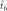
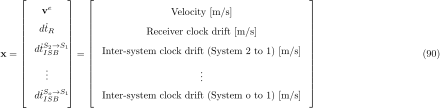
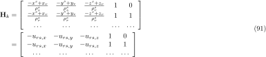
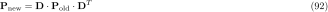
IRW on position
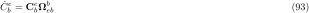
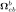
are around for a pedestrian or ship,
for a pedestrian or ship,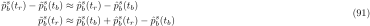
for a car,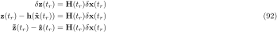
for a military aircraft.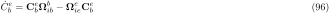
The state transition matrix and the system/process noise covariance matrix can be calculated with the van Loan method [51] vanloan1978. In short
 matrix called
matrix called 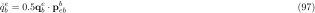
( is the dimension of
is the dimension of 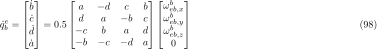
and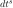
is the power spectral density of the noise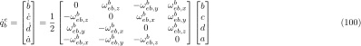
)
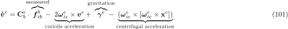
![\begin{equation} \mathbf{B} = \text{expm}(\mathbf{A}) = \left[ \begin{array}{c:c}
\dots & \mathbf{\Phi}^{-1} \mathbf{Q} \\ \hdashline
\mathbf{0} & \mathbf{\Phi}^T \end{array} \right]
= \begin{bmatrix} \mathbf{B}_{11} & \mathbf{B}_{12} \\
\mathbf{B}_{21} & \mathbf{B}_{22} \end{bmatrix}
\end{equation}](form_187.svg)
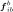
as
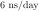
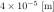
as
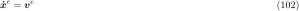
Because the ambiguity related parts of
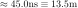
are 0 and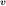
are purely diagonal matrices, the Van-Loan method must be only calculated for the 6x6 top left part of the matrices (position, velocity). The ambiguities can be directly computed in as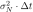
.See [18] Groves2013, p. 419ff
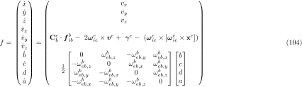
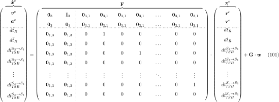
where the estimates are
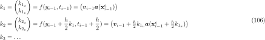

with helper definition for the velocities similar to the Line-of-Sight vector

Differentiating yields
![\begin{equation}\begin{array}{rl}
\mathbf{H}_k &= \left[\begin{array}{ccc:ccc:cccc}
{\text{u}_{r,x}^1} - {\text{u}_{r,x}^2} & {\text{u}_{r,y}^1} - {\text{u}_{r,y}^2} & {\text{u}_{r,z}^1} - {\text{u}_{r,z}^2} & 0 & 0 & 0 & {\lambda_j^1} & 0 & \dots & 0\\
{\text{u}_{r,x}^1} - {\text{u}_{r,x}^3} & {\text{u}_{r,y}^1} - {\text{u}_{r,y}^3} & {\text{u}_{r,z}^1} - {\text{u}_{r,z}^3} & 0 & 0 & 0 & 0 & {\lambda_j^1} & \dots & 0\\
\dots & \dots & \dots & \dots & \dots & \dots & \dots & \dots & \dots & \dots\\
{\text{u}_{r,x}^1} - {\text{u}_{r,x}^m} & {\text{u}_{r,y}^1} - {\text{u}_{r,y}^m} & {\text{u}_{r,z}^1} - {\text{u}_{r,z}^m} & 0 & 0 & 0 & 0 & 0 & \dots & {\lambda_j^1}\\ \hdashline
{\text{u}_{r,x}^1} - {\text{u}_{r,x}^2} & {\text{u}_{r,y}^1} - {\text{u}_{r,y}^2} & {\text{u}_{r,z}^1} - {\text{u}_{r,z}^2} & 0 & 0 & 0 & 0 & 0 & \dots & 0\\
{\text{u}_{r,x}^1} - {\text{u}_{r,x}^3} & {\text{u}_{r,y}^1} - {\text{u}_{r,y}^3} & {\text{u}_{r,z}^1} - {\text{u}_{r,z}^3} & 0 & 0 & 0 & 0 & 0 & \dots & 0\\
\dots & \dots & \dots & \dots & \dots & \dots & \dots & \dots & \dots & \dots\\
{\text{u}_{r,x}^1} - {\text{u}_{r,x}^m} & {\text{u}_{r,y}^1} - {\text{u}_{r,y}^m} & {\text{u}_{r,z}^1} - {\text{u}_{r,z}^m} & 0 & 0 & 0 & 0 & 0 & \dots & 0\\ \hdashline
- {\text{u}_{r,v_x}^1} \left({\text{u}_{r,x}^1}\right)^{2} + {\text{u}_{r,v_x}^1} + {\text{u}_{r,v_x}^2} \left({\text{u}_{r,x}^2}\right)^{2} - {\text{u}_{r,v_x}^2} - {\text{u}_{r,v_y}^1} {\text{u}_{r,x}^1} {\text{u}_{r,y}^1} + {\text{u}_{r,v_y}^2} {\text{u}_{r,x}^2} {\text{u}_{r,y}^2} - {\text{u}_{r,v_z}^1} {\text{u}_{r,x}^1} {\text{u}_{r,z}^1} + {\text{u}_{r,v_z}^2} {\text{u}_{r,x}^2} {\text{u}_{r,z}^2} & - {\text{u}_{r,v_x}^1} {\text{u}_{r,x}^1} {\text{u}_{r,y}^1} + {\text{u}_{r,v_x}^2} {\text{u}_{r,x}^2} {\text{u}_{r,y}^2} - {\text{u}_{r,v_y}^1} \left({\text{u}_{r,y}^1}\right)^{2} + {\text{u}_{r,v_y}^1} + {\text{u}_{r,v_y}^2} \left({\text{u}_{r,y}^2}\right)^{2} - {\text{u}_{r,v_y}^2} - {\text{u}_{r,v_z}^1} {\text{u}_{r,y}^1} {\text{u}_{r,z}^1} + {\text{u}_{r,v_z}^2} {\text{u}_{r,y}^2} {\text{u}_{r,z}^2} & - {\text{u}_{r,v_x}^1} {\text{u}_{r,x}^1} {\text{u}_{r,z}^1} + {\text{u}_{r,v_x}^2} {\text{u}_{r,x}^2} {\text{u}_{r,z}^2} - {\text{u}_{r,v_y}^1} {\text{u}_{r,y}^1} {\text{u}_{r,z}^1} + {\text{u}_{r,v_y}^2} {\text{u}_{r,y}^2} {\text{u}_{r,z}^2} - {\text{u}_{r,v_z}^1} \left({\text{u}_{r,z}^1}\right)^{2} + {\text{u}_{r,v_z}^1} + {\text{u}_{r,v_z}^2} \left({\text{u}_{r,z}^2}\right)^{2} - {\text{u}_{r,v_z}^2} & {\text{u}_{r,x}^1} - {\text{u}_{r,x}^2} & {\text{u}_{r,y}^1} - {\text{u}_{r,y}^2} & {\text{u}_{r,z}^1} - {\text{u}_{r,z}^2} & 0 & 0 & \dots & 0\\
- {\text{u}_{r,v_x}^1} \left({\text{u}_{r,x}^1}\right)^{2} + {\text{u}_{r,v_x}^1} + {\text{u}_{r,v_x}^3} \left({\text{u}_{r,x}^3}\right)^{2} - {\text{u}_{r,v_x}^3} - {\text{u}_{r,v_y}^1} {\text{u}_{r,x}^1} {\text{u}_{r,y}^1} + {\text{u}_{r,v_y}^3} {\text{u}_{r,x}^3} {\text{u}_{r,y}^3} - {\text{u}_{r,v_z}^1} {\text{u}_{r,x}^1} {\text{u}_{r,z}^1} + {\text{u}_{r,v_z}^3} {\text{u}_{r,x}^3} {\text{u}_{r,z}^3} & - {\text{u}_{r,v_x}^1} {\text{u}_{r,x}^1} {\text{u}_{r,y}^1} + {\text{u}_{r,v_x}^3} {\text{u}_{r,x}^3} {\text{u}_{r,y}^3} - {\text{u}_{r,v_y}^1} \left({\text{u}_{r,y}^1}\right)^{2} + {\text{u}_{r,v_y}^1} + {\text{u}_{r,v_y}^3} \left({\text{u}_{r,y}^3}\right)^{2} - {\text{u}_{r,v_y}^3} - {\text{u}_{r,v_z}^1} {\text{u}_{r,y}^1} {\text{u}_{r,z}^1} + {\text{u}_{r,v_z}^3} {\text{u}_{r,y}^3} {\text{u}_{r,z}^3} & - {\text{u}_{r,v_x}^1} {\text{u}_{r,x}^1} {\text{u}_{r,z}^1} + {\text{u}_{r,v_x}^3} {\text{u}_{r,x}^3} {\text{u}_{r,z}^3} - {\text{u}_{r,v_y}^1} {\text{u}_{r,y}^1} {\text{u}_{r,z}^1} + {\text{u}_{r,v_y}^3} {\text{u}_{r,y}^3} {\text{u}_{r,z}^3} - {\text{u}_{r,v_z}^1} \left({\text{u}_{r,z}^1}\right)^{2} + {\text{u}_{r,v_z}^1} + {\text{u}_{r,v_z}^3} \left({\text{u}_{r,z}^3}\right)^{2} - {\text{u}_{r,v_z}^3} & {\text{u}_{r,x}^1} - {\text{u}_{r,x}^3} & {\text{u}_{r,y}^1} - {\text{u}_{r,y}^3} & {\text{u}_{r,z}^1} - {\text{u}_{r,z}^3} & 0 & 0 & \dots & 0\\
\dots & \dots & \dots & \dots & \dots & \dots & \dots & \dots & \dots & \dots\\
- {\text{u}_{r,v_x}^1} \left({\text{u}_{r,x}^1}\right)^{2} + {\text{u}_{r,v_x}^1} + {\text{u}_{r,v_x}^m} \left({\text{u}_{r,x}^m}\right)^{2} - {\text{u}_{r,v_x}^m} - {\text{u}_{r,v_y}^1} {\text{u}_{r,x}^1} {\text{u}_{r,y}^1} + {\text{u}_{r,v_y}^m} {\text{u}_{r,x}^m} {\text{u}_{r,y}^m} - {\text{u}_{r,v_z}^1} {\text{u}_{r,x}^1} {\text{u}_{r,z}^1} + {\text{u}_{r,v_z}^m} {\text{u}_{r,x}^m} {\text{u}_{r,z}^m} & - {\text{u}_{r,v_x}^1} {\text{u}_{r,x}^1} {\text{u}_{r,y}^1} + {\text{u}_{r,v_x}^m} {\text{u}_{r,x}^m} {\text{u}_{r,y}^m} - {\text{u}_{r,v_y}^1} \left({\text{u}_{r,y}^1}\right)^{2} + {\text{u}_{r,v_y}^1} + {\text{u}_{r,v_y}^m} \left({\text{u}_{r,y}^m}\right)^{2} - {\text{u}_{r,v_y}^m} - {\text{u}_{r,v_z}^1} {\text{u}_{r,y}^1} {\text{u}_{r,z}^1} + {\text{u}_{r,v_z}^m} {\text{u}_{r,y}^m} {\text{u}_{r,z}^m} & - {\text{u}_{r,v_x}^1} {\text{u}_{r,x}^1} {\text{u}_{r,z}^1} + {\text{u}_{r,v_x}^m} {\text{u}_{r,x}^m} {\text{u}_{r,z}^m} - {\text{u}_{r,v_y}^1} {\text{u}_{r,y}^1} {\text{u}_{r,z}^1} + {\text{u}_{r,v_y}^m} {\text{u}_{r,y}^m} {\text{u}_{r,z}^m} - {\text{u}_{r,v_z}^1} \left({\text{u}_{r,z}^1}\right)^{2} + {\text{u}_{r,v_z}^1} + {\text{u}_{r,v_z}^m} \left({\text{u}_{r,z}^m}\right)^{2} - {\text{u}_{r,v_z}^m} & {\text{u}_{r,x}^1} - {\text{u}_{r,x}^m} & {\text{u}_{r,y}^1} - {\text{u}_{r,y}^m} & {\text{u}_{r,z}^1} - {\text{u}_{r,z}^m} & 0 & 0 & \dots & 0\\
\end{array}\right]
\end{array}
\end{equation}](form_200.svg)
Because of the double differences, the measurements are correlated which causes the  matrix to have non diagonal elements. According to the propagation of uncertainty one can write this as:
matrix to have non diagonal elements. According to the propagation of uncertainty one can write this as:

where
 is the uncorrelated measurement error described below
is the uncorrelated measurement error described below is the Jacobi-Matrix
is the Jacobi-Matrix  with
with  being the Single GNSS Observation Equation (see [48] SpringerHandbookGNSS2017, p.606 / [35] Morton2020-vol1, p. 483 / [18] Groves2013, p. 443)
being the Single GNSS Observation Equation (see [48] SpringerHandbookGNSS2017, p.606 / [35] Morton2020-vol1, p. 483 / [18] Groves2013, p. 443)For the double difference measurements the estimates are
![\begin{equation}h = \left[\begin{matrix}
{p_b^1} - {p_b^2} - {p_r^1} + {p_r^2}\\
{p_b^1} - {p_b^3} - {p_r^1} + {p_r^3}\\
\dots\\
{p_b^1} - {p_b^m} - {p_r^1} + {p_r^m}\\ \hline
{\varphi_b^1} - {\varphi_b^2} - {\varphi_r^1} + {\varphi_r^2}\\
{\varphi_b^1} - {\varphi_b^3} - {\varphi_r^1} + {\varphi_r^3}\\
\dots\\
{\varphi_b^1} - {\varphi_b^m} - {\varphi_r^1} + {\varphi_r^m}\\ \hline
{\dotup{p}_b^1} - {\dotup{p}_b^2} - {\dotup{p}_r^1} + {\dotup{p}_r^2}\\
{\dotup{p}_b^1} - {\dotup{p}_b^3} - {\dotup{p}_r^1} + {\dotup{p}_r^3}\\
\dots\\
{\dotup{p}_b^1} - {\dotup{p}_b^m} - {\dotup{p}_r^1} + {\dotup{p}_r^m}\\
\end{matrix}\right]
\end{equation}](form_207.svg)
which leads to the following  means variances, not standard deviations
means variances, not standard deviations
![\begin{equation}\mathbf{\tilde{R}} =
\left[\begin{array}{ccccccccc|ccccccccc|ccccccccc}
{\sigma_{\varphi,r}^1} & 0 & 0 & 0 & 0 & 0 & 0 & 0 & 0 & 0 & 0 & 0 & 0 & 0 & 0 & 0 & 0 & 0 & 0 & 0 & 0 & 0 & 0 & 0 & 0 & 0 & 0 \\
0 & {\sigma_{\varphi,b}^1} & 0 & 0 & 0 & 0 & 0 & 0 & 0 & 0 & 0 & 0 & 0 & 0 & 0 & 0 & 0 & 0 & 0 & 0 & 0 & 0 & 0 & 0 & 0 & 0 & 0 \\
0 & 0 & {\sigma_{\varphi,r}^2} & 0 & 0 & 0 & 0 & 0 & 0 & 0 & 0 & 0 & 0 & 0 & 0 & 0 & 0 & 0 & 0 & 0 & 0 & 0 & 0 & 0 & 0 & 0 & 0 \\
0 & 0 & 0 & {\sigma_{\varphi,b}^2} & 0 & 0 & 0 & 0 & 0 & 0 & 0 & 0 & 0 & 0 & 0 & 0 & 0 & 0 & 0 & 0 & 0 & 0 & 0 & 0 & 0 & 0 & 0 \\
0 & 0 & 0 & 0 & {\sigma_{\varphi,r}^3} & 0 & 0 & 0 & 0 & 0 & 0 & 0 & 0 & 0 & 0 & 0 & 0 & 0 & 0 & 0 & 0 & 0 & 0 & 0 & 0 & 0 & 0 \\
0 & 0 & 0 & 0 & 0 & {\sigma_{\varphi,b}^3} & 0 & 0 & 0 & 0 & 0 & 0 & 0 & 0 & 0 & 0 & 0 & 0 & 0 & 0 & 0 & 0 & 0 & 0 & 0 & 0 & 0 \\
0 & 0 & 0 & 0 & 0 & 0 & \ddots & 0 & 0 & 0 & 0 & 0 & 0 & 0 & 0 & 0 & 0 & 0 & 0 & 0 & 0 & 0 & 0 & 0 & 0 & 0 & 0 \\
0 & 0 & 0 & 0 & 0 & 0 & 0 & {\sigma_{\varphi,r}^m} & 0 & 0 & 0 & 0 & 0 & 0 & 0 & 0 & 0 & 0 & 0 & 0 & 0 & 0 & 0 & 0 & 0 & 0 & 0 \\
0 & 0 & 0 & 0 & 0 & 0 & 0 & 0 & {\sigma_{\varphi,b}^m} & 0 & 0 & 0 & 0 & 0 & 0 & 0 & 0 & 0 & 0 & 0 & 0 & 0 & 0 & 0 & 0 & 0 & 0 \\\hline
0 & 0 & 0 & 0 & 0 & 0 & 0 & 0 & 0 & {\sigma_{p,r}^1} & 0 & 0 & 0 & 0 & 0 & 0 & 0 & 0 & 0 & 0 & 0 & 0 & 0 & 0 & 0 & 0 & 0 \\
0 & 0 & 0 & 0 & 0 & 0 & 0 & 0 & 0 & 0 & {\sigma_{p,b}^1} & 0 & 0 & 0 & 0 & 0 & 0 & 0 & 0 & 0 & 0 & 0 & 0 & 0 & 0 & 0 & 0 \\
0 & 0 & 0 & 0 & 0 & 0 & 0 & 0 & 0 & 0 & 0 & {\sigma_{p,r}^2} & 0 & 0 & 0 & 0 & 0 & 0 & 0 & 0 & 0 & 0 & 0 & 0 & 0 & 0 & 0 \\
0 & 0 & 0 & 0 & 0 & 0 & 0 & 0 & 0 & 0 & 0 & 0 & {\sigma_{p,b}^2} & 0 & 0 & 0 & 0 & 0 & 0 & 0 & 0 & 0 & 0 & 0 & 0 & 0 & 0 \\
0 & 0 & 0 & 0 & 0 & 0 & 0 & 0 & 0 & 0 & 0 & 0 & 0 & {\sigma_{p,r}^3} & 0 & 0 & 0 & 0 & 0 & 0 & 0 & 0 & 0 & 0 & 0 & 0 & 0 \\
0 & 0 & 0 & 0 & 0 & 0 & 0 & 0 & 0 & 0 & 0 & 0 & 0 & 0 & {\sigma_{p,b}^3} & 0 & 0 & 0 & 0 & 0 & 0 & 0 & 0 & 0 & 0 & 0 & 0 \\
0 & 0 & 0 & 0 & 0 & 0 & 0 & 0 & 0 & 0 & 0 & 0 & 0 & 0 & 0 & \ddots & 0 & 0 & 0 & 0 & 0 & 0 & 0 & 0 & 0 & 0 & 0 \\
0 & 0 & 0 & 0 & 0 & 0 & 0 & 0 & 0 & 0 & 0 & 0 & 0 & 0 & 0 & 0 & {\sigma_{p,r}^m} & 0 & 0 & 0 & 0 & 0 & 0 & 0 & 0 & 0 & 0 \\
0 & 0 & 0 & 0 & 0 & 0 & 0 & 0 & 0 & 0 & 0 & 0 & 0 & 0 & 0 & 0 & 0 & {\sigma_{p,b}^m} & 0 & 0 & 0 & 0 & 0 & 0 & 0 & 0 & 0 \\\hline
0 & 0 & 0 & 0 & 0 & 0 & 0 & 0 & 0 & 0 & 0 & 0 & 0 & 0 & 0 & 0 & 0 & 0 & {\sigma_{d,r}^1} & 0 & 0 & 0 & 0 & 0 & 0 & 0 & 0 \\
0 & 0 & 0 & 0 & 0 & 0 & 0 & 0 & 0 & 0 & 0 & 0 & 0 & 0 & 0 & 0 & 0 & 0 & 0 & {\sigma_{d,b}^1} & 0 & 0 & 0 & 0 & 0 & 0 & 0 \\
0 & 0 & 0 & 0 & 0 & 0 & 0 & 0 & 0 & 0 & 0 & 0 & 0 & 0 & 0 & 0 & 0 & 0 & 0 & 0 & {\sigma_{d,r}^2} & 0 & 0 & 0 & 0 & 0 & 0 \\
0 & 0 & 0 & 0 & 0 & 0 & 0 & 0 & 0 & 0 & 0 & 0 & 0 & 0 & 0 & 0 & 0 & 0 & 0 & 0 & 0 & {\sigma_{d,b}^2} & 0 & 0 & 0 & 0 & 0 \\
0 & 0 & 0 & 0 & 0 & 0 & 0 & 0 & 0 & 0 & 0 & 0 & 0 & 0 & 0 & 0 & 0 & 0 & 0 & 0 & 0 & 0 & {\sigma_{d,r}^3} & 0 & 0 & 0 & 0 \\
0 & 0 & 0 & 0 & 0 & 0 & 0 & 0 & 0 & 0 & 0 & 0 & 0 & 0 & 0 & 0 & 0 & 0 & 0 & 0 & 0 & 0 & 0 & {\sigma_{d,b}^3} & 0 & 0 & 0 \\
0 & 0 & 0 & 0 & 0 & 0 & 0 & 0 & 0 & 0 & 0 & 0 & 0 & 0 & 0 & 0 & 0 & 0 & 0 & 0 & 0 & 0 & 0 & 0 & \ddots & 0 & 0 \\
0 & 0 & 0 & 0 & 0 & 0 & 0 & 0 & 0 & 0 & 0 & 0 & 0 & 0 & 0 & 0 & 0 & 0 & 0 & 0 & 0 & 0 & 0 & 0 & 0 & {\sigma_{d,r}^m} & 0 \\
0 & 0 & 0 & 0 & 0 & 0 & 0 & 0 & 0 & 0 & 0 & 0 & 0 & 0 & 0 & 0 & 0 & 0 & 0 & 0 & 0 & 0 & 0 & 0 & 0 & 0 & {\sigma_{d,b}^m} \\
\end{array}\right]
\end{equation}](form_209.svg)
![\begin{equation}\mathbf{J} =
\left[\begin{array}{ccccccccc|ccccccccc|ccccccccc}
-1 & 1 & 1 & -1 & 0 & 0 & \dots & 0 & 0 & 0 & 0 & 0 & 0 & 0 & 0 & \dots & 0 & 0 & 0 & 0 & 0 & 0 & 0 & 0 & \dots & 0 & 0\\
-1 & 1 & 0 & 0 & 1 & -1 & \dots & 0 & 0 & 0 & 0 & 0 & 0 & 0 & 0 & \dots & 0 & 0 & 0 & 0 & 0 & 0 & 0 & 0 & \dots & 0 & 0\\
\dots & \dots & \dots & \dots & \dots & \dots & \dots & \dots & \dots & \dots & \dots & \dots & \dots & \dots & \dots & \dots & \dots & \dots & \dots & \dots & \dots & \dots & \dots & \dots & \dots & \dots & \dots\\
-1 & 1 & 0 & 0 & 0 & 0 & \dots & 1 & -1 & 0 & 0 & 0 & 0 & 0 & 0 & \dots & 0 & 0 & 0 & 0 & 0 & 0 & 0 & 0 & \dots & 0 & 0\\\hline
0 & 0 & 0 & 0 & 0 & 0 & \dots & 0 & 0 & -1 & 1 & 1 & -1 & 0 & 0 & \dots & 0 & 0 & 0 & 0 & 0 & 0 & 0 & 0 & \dots & 0 & 0\\
0 & 0 & 0 & 0 & 0 & 0 & \dots & 0 & 0 & -1 & 1 & 0 & 0 & 1 & -1 & \dots & 0 & 0 & 0 & 0 & 0 & 0 & 0 & 0 & \dots & 0 & 0\\
\dots & \dots & \dots & \dots & \dots & \dots & \dots & \dots & \dots & \dots & \dots & \dots & \dots & \dots & \dots & \dots & \dots & \dots & \dots & \dots & \dots & \dots & \dots & \dots & \dots & \dots & \dots\\
0 & 0 & 0 & 0 & 0 & 0 & \dots & 0 & 0 & -1 & 1 & 0 & 0 & 0 & 0 & \dots & 1 & -1 & 0 & 0 & 0 & 0 & 0 & 0 & \dots & 0 & 0\\\hline
0 & 0 & 0 & 0 & 0 & 0 & \dots & 0 & 0 & 0 & 0 & 0 & 0 & 0 & 0 & \dots & 0 & 0 & -1 & 1 & 1 & -1 & 0 & 0 & \dots & 0 & 0\\
0 & 0 & 0 & 0 & 0 & 0 & \dots & 0 & 0 & 0 & 0 & 0 & 0 & 0 & 0 & \dots & 0 & 0 & -1 & 1 & 0 & 0 & 1 & -1 & \dots & 0 & 0\\
\dots & \dots & \dots & \dots & \dots & \dots & \dots & \dots & \dots & \dots & \dots & \dots & \dots & \dots & \dots & \dots & \dots & \dots & \dots & \dots & \dots & \dots & \dots & \dots & \dots & \dots & \dots\\
0 & 0 & 0 & 0 & 0 & 0 & \dots & 0 & 0 & 0 & 0 & 0 & 0 & 0 & 0 & \dots & 0 & 0 & -1 & 1 & 0 & 0 & 0 & 0 & \dots & 1 & -1
\end{array}\right]
\end{equation}](form_210.svg)
As the matrix has a block for each observation type and the matrix is diagonal, we can calculate each part separately and join them into the final matrix like


See [47] rtklibexplorer2021, eq. E.6.24, p. 162

where:
![\begin{equation*}\begin{array}{cl}
F^s & \text{Satellite system error factor (1:GPS, Galileo, QZSS and BeiDou, 1.5: GLONASS, 3.0: SBAS)} \\
R_r & \text{Code/Carrier-phase error ratio (default value is 100)} \\
a_\sigma, b_\sigma & \text{Carrier-phase error factor $a$ and $b$ [m] (default values are 0.003m for both factors)} \\
\sigma_{dj} & \text{Doppler Frequency error factor [Hz] (default value is 1 Hz)} \\
\end{array}
\end{equation*}](form_215.svg)
See [18] Groves2013, p. 422f
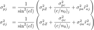
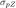
,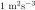
,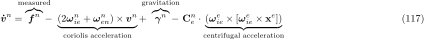
, ,
,  and
and  should be determined empirically
should be determined empirically Range acceleration [groves2013, Appendix G.4.1] (probably not necessary)
Range acceleration [groves2013, Appendix G.4.1] (probably not necessary)See Dingler2022-NIS

where

 degrees of freedom is the the dimension of the measurement vector
degrees of freedom is the the dimension of the measurement vector Innovation Covariance Matrix
Innovation Covariance MatrixNIS accepted if
![\begin{equation}\epsilon_{\boldsymbol{\delta}\mathbf{z}} \in [r_1,r_2] \text{.}
\end{equation}](form_228.svg)
where ![$[r_1,r_2]$](form_229.svg) is the confidence interval
is the confidence interval
and can be calculated with the inverse cumulative distribution function  (also called Quantile function) of the chi-squared distribution (Chi Squared Distribution - Boost 1.85.0 - quantile function)
(also called Quantile function) of the chi-squared distribution (Chi Squared Distribution - Boost 1.85.0 - quantile function)
Chi-squared distribution - Wikipedia (Incomplete Gamma Functions - Boost 1.85.0)

Lower incomplete gamma function - Wikipedia

Test only  with
with
NIS only tells that something is wrong, not what. Need to look at post-fit residuals to find incorrect measurements.
Readjusting the float estimator  with the ambiguity residual
with the ambiguity residual

After fixing the ambiguities we do a Kalman Filter update with the ambiguities
This is the difference between the current ambiguities in the state vector and the fixed ambiguities here
This extends the previously stated matrix
![\begin{equation}\overbrace{
\begin{bmatrix}
{\check{N}_{br}^{12}} \\
{\check{N}_{br}^{13}} \\
\vdots \\
{\check{N}_{br}^{1m}} \\
\end{bmatrix}
}^{\mathbf{z}} =
\overbrace{
\left[ \begin{array}{cc:cccc}
\mathbf{0}_{1x3} & \mathbf{0}_{1x3} & 1 & 0 & \dots & 0 \\
\mathbf{0}_{1x3} & \mathbf{0}_{1x3} & 0 & 1 & \dots & 0 \\
\vdots & \vdots & \vdots & \vdots & \ddots & \vdots \\
\mathbf{0}_{1x3} & \mathbf{0}_{1x3} & 0 & 0 & \dots & 1 \\
\end{array} \right]}^{\mathbf{H}}
\overbrace{
\begin{bmatrix}
{ \mathbf{r}_{br} } \\
{ \mathbf{v}_{br} } \\\hline
{N_{br}^{12}} \\
{N_{br}^{13}} \\
\vdots \\
{N_{br}^{1m}} \\
\end{bmatrix}
}^{\mathbf{x}}
\end{equation}](form_243.svg)
with being very small, e.g.